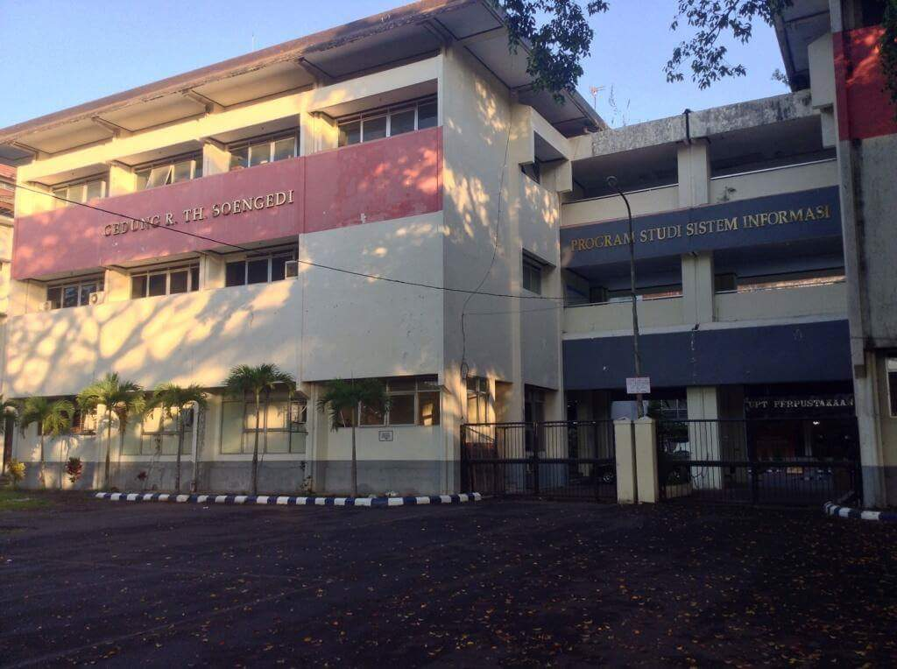

FASILKOM UNEJ yang diajukan dirancang dengan visi “Unggul dalam pengembangan ilmu komputer untuk menunjang pertanian industrial pada tahun 2035”. Untuk mewujudkan visi tersebut, sudah dipersiapkan strukur kelembagaan, profile mahasiswa dan lulusan, perencanaan penambahan dan pengembangan SDM baik dosen maupun tenaga kependidikan, sarana dan prasarana, road map penelitian dan pengabdian kepada masyarakat dan kurikulum untuk masing-masing prodi sudah dipersiapkan dengan learning outcomes yang sudah ditentukan.

Rancangan kurikulum yang dikelola fakultas sudah dipersiapkan dengan capaian pembelajaran “Mempelajari berbagai aktivitas yang membutuhkan, mengambil manfaat dari, atau mempergunakan komputer yang terdiri dari perancangan dan pembuatan hardware dan software, pemrosesan, pengolahan dan pengelolaan informasi, kajian-kajian ilmiah memanfaatkan komputer, rekayasa sistem komputer agar dapat melakukan hal-hal cerdas, penciptaan dan pemanfaatan media komunikasi dan hiburan, pencarian dan pengumpulan informasi untuk keperluan tertentu”.